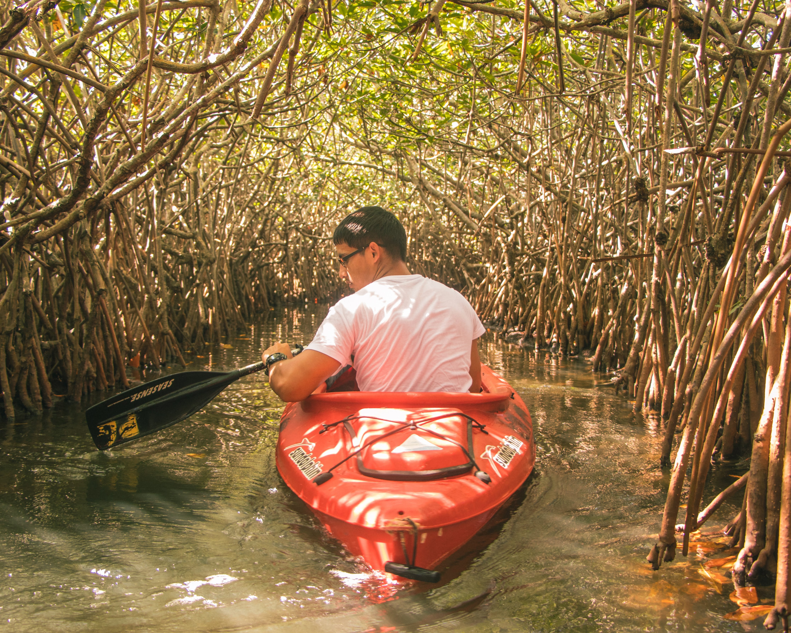

Background
South Africa, officially the Republic of South Africa (RSA), is the southernmost country in Africa. It is bounded to the south by 2,798 kilometres (1,739 mi) of coastline of Southern Africa stretching along the South Atlantic and Indian Oceans; to the north by the neighbouring countries of Namibia, Botswana, and Zimbabwe; and to the east and northeast by Mozambique and Swaziland (Eswatini); and it surrounds the enclaved country of Lesotho. South Africa is the largest country in Southern Africa and the 25th-largest country in the world by land area and, with over 57 million people, is the world's 24th-most populous nation. It is the southernmost country on the mainland of the Old World or the Eastern Hemisphere. About 80 percent of South Africans are of Sub-Saharan African ancestry, divided among a variety of ethnic groups speaking different African languages, nine of which have official status.[11] The remaining population consists of Africa's largest communities of European (White), Asian (Indian), and multiracial (Coloured) ancestry.
South Africa is a multiethnic society encompassing a wide variety of cultures, languages, and religions. Its pluralistic makeup is reflected in the constitution's recognition of 11 official languages, which is the fourth highest number in the world. Two of these languages are of European origin: Afrikaans developed from Dutch and serves as the first language of most coloured and white South Africans; English reflects the legacy of British colonialism, and is commonly used in public and commercial life, though it is fourth-ranked as a spoken first language. The country is one of the few in Africa never to have had a coup d'état, and regular elections have been held for almost a century. However, the vast majority of black South Africans were not enfranchised until 1994. During the 20th century, the black majority sought to recover its rights from the dominant white minority, with this struggle playing a large role in the country's recent history and politics. The National Party imposed apartheid in 1948, institutionalising previous racial segregation. After a long and sometimes violent struggle by the African National Congress (ANC) and other anti-apartheid activists both inside and outside the country, the repeal of discriminatory laws began in 1990.
Since 1994, all ethnic and linguistic groups have held political representation in the country's liberal democracy, which comprises a parliamentary republic and nine provinces. South Africa is often referred to as the "rainbow nation" to describe the country's multicultural diversity, especially in the wake of apartheid. The World Bank classifies South Africa as an upper-middle-income economy, and a newly industrialised country. Its economy is the second-largest in Africa, and the 34th-largest in the world. In terms of purchasing power parity, South Africa has the seventh-highest per capita income in Africa. However, poverty and inequality remain widespread, with about a quarter of the population unemployed and living on less than US$1.25 a day. Nevertheless, South Africa has been identified as a middle power in international affairs, and maintains significant regional influence.

River Cruise
Cruise down the river and spot some hippos or crocodiles along the way. Just don't fall off the boat. There are several tour companies available.
Kayaking
For the adventerous give kayaking with the crocodiles a try.
Safari on horse
For those that ride a horse or want to give it a try then you can go on a wildlife safari on a horse.
Packages
A year-round destination as it has various regional climates with various wildlife and places to visit.